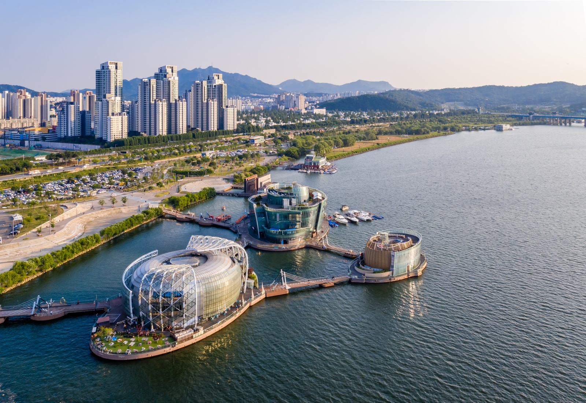

HTML5 학습
W3C
W3SCHOOLS
jQuery.
나의 소개
- 이름 : 김정현
- 별명 : 유니코
- 관심기술 : HTML5
- 취미 : 스티커모으기
올해 재미있게 읽은 책
| 제목 |
장르 |
| 용의자 X의 헌신 |
추리 |
| 연금술사 |
소설 |
| 숨결이 바람 될 떄 |
에세이 |
자랑하고싶은 우리동네의 아름다운 곳
세빛섬(플로팅 아일랜드, Floating Island)는 2006년 서울 시민 김은성씨의 제안으로
서울시에서 수익형 민자사업(BTO)으로 만든 인공섬이다. 비스타(Vista), 비바(Viva), 테라(Terra)의 3개로 나뉘어 있다.

서울의 한강에 있는 세빛섬
이 문서는 노유경에 의해 HTML5와 CSS3 기술을 사용하여 2025년 3월 26일에 작성하였습니다.(ver 1.0)